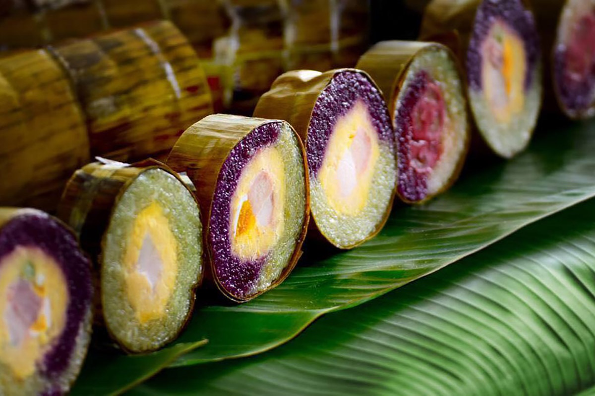

Thông tin về món ăn
Nguồn gốc
Đây là loại bánh truyền thống của nhà họ Huỳnh tại Cần Thơ. Bánh do bà Huỳnh Thị Trọng (Sáu Trọng) phát minh vào những năm 60 của thế kỷ trước. Về sau bánh được lan truyền khắp vùng Cần Thơ, rồi đến miền Tây.
Nguyên liệu chính
- Gạo nếp: Chọn loại nếp ngon, dẻo để vỏ bánh đạt độ mềm, thơm.
- Lá cẩm: Được nấu lấy nước để ngâm gạo nếp, tạo màu tím tự nhiên và hương thơm đặc trưng cho bánh.
- Đậu xanh: Cùng với thịt hoặc trứng muối tạo thành nhân bánh
- Thịt heo: Thường dùng thịt ba chỉ hoặc thịt nạc.
- Trứng muối: Tạo vị béo mặn hấp dẫn.
- Gia vị: đường, muối, hạt nêm, hành lá, hành tím.
Đặc điểm
- Hương vị: Ngọt vừa phải, bùi, thơm mùi lá cẩm đặc trưng, mềm dẻo.
- Cách thưởng thức: Chiên sơ trước khi ăn, hấp hoặc hấp lại khi ăn, cắt thành lát vừa ăn.
- Trải nghiệm: Vừa thưởng thức bánh, vừa chiêm ngưỡng màu sắc đẹp mắt, rất thích hợp làm quà sang trọng, mang hơi thở miền Tây.